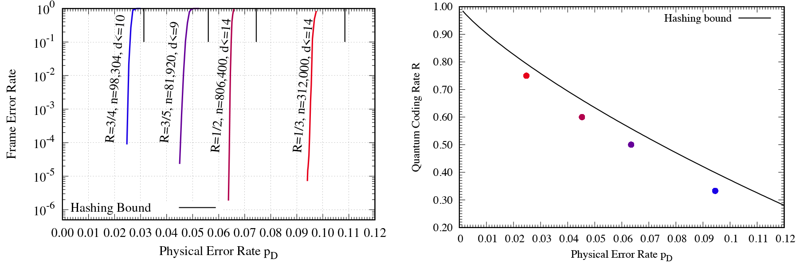

・最小ヒープ
link
・ハフマン符号
link
・語頭符号
link
・\(\mathbb{Z}_n^\times\)が巡回群となる\(n\)
link
実用的な量子計算を実現するためには、多数の信頼できる論理量子ビットを構築することが不可欠です。 しかし現在の量子コンピュータの規模では、物理量子ビットが数千個あっても、論理量子ビットは数十個程度しか得られません。 この制約は、デバイス実装や安定性といった工学的要因による部分もありますが、 量子誤り訂正の符号理論を理想化して考えても、符号設計そのものに根本的な課題が残されています。
低計算量のビリーフプロパゲーション (BP) 復号と組み合わせた量子 LDPC (Low-Density Parity-Check) 符号は、 有望なアプローチとして長らく期待されてきました。 しかし、以下のような問題が依然として存在しています：
現時点では、これらすべての課題を同時に克服した量子誤り訂正方式は存在していません。
一方で古典誤り訂正の分野はすでに成熟しています。 例えば移動通信では LDPC 符号が 5G 規格に採用され、通信インフラの中核を担っています。 またパソコン上でも、符号長 \(10^7\) ビット規模の大規模シミュレーションが可能です。 このように古典通信では超大規模符号の実用展開が達成されていますが、 量子誤り訂正符号は依然として同等の水準には到達していません。
この状況に対応するため、私たちの研究グループは量子 LDPC 符号を用いた誤り訂正、 特にスパースな二元または非二元行列に基づく CSS (Calderbank–Shor–Steane) 符号の構成と復号に取り組んでいます。 実用的な復号アルゴリズムのもとでハッシング限界に近づく量子符号の設計を目指しています。
大きな成果のひとつは、置換行列から構成した明示的な量子 LDPC 符号の開発です。 これらは脱分極チャネル上で優れた誤り訂正性能を示し、 タナーグラフ内の短い閉路を避けることでエラーフロア現象を抑制しています。
また、量子雑音モデルに特有の縮退性を考慮した復号アルゴリズムも開発しています。 これにはシンドロームに基づく復号法や、ガロア体上に適応したビリーフプロパゲーション法が含まれます。 最近の結果では、双対符号と適切な後処理を組み合わせることで、復号成功率が大きく向上することが示されています。
これらの研究を通じて、ハッシング限界に近い性能の達成、低レート領域におけるエラーフロアの低減、 大きな巡回長を持つ符号の構成、鋭い誤り率遷移を示す二元 LDPC 符号の発見などを実現してきました。 本研究は、スケーラブルで耐故障性のある量子通信・量子計算の実現という長期的目標に貢献しています。

河本大輝さん（東京科学大学修士課程修了）と笠井健太准教授（東京科学大学）の共著論文 「Quantum error correction near the coding theoretical bound」が、 npj Quantum Information に掲載されました。
本研究では、LDPC符号に基づく量子誤り訂正方式により、符号理論的限界（ハッシング限界）に迫る高効率な符号設計を実現しました。 また、数十万規模の論理量子ビットを効率的に処理できることを示し、スケーラブルな量子計算の実現に向けた重要な一歩となりました。
論文は npj Quantum Information (Nature) にて公開されています。
npj Quantum Information に掲載された論文 「Quantum error correction near the coding theoretical bound」が、 複数のニュースメディアで紹介されました。
これらの記事では、提案手法が量子誤り訂正の符号理論限界に迫る性能を持ち、 大規模量子コンピュータの実現に向けた重要な進展であると紹介されています。
量子誤り訂正における縮退誤りのデコードに関する新しい研究成果 「Quantum Error Correction Exploiting Degeneracy to Approach the Hashing Bound」を arXiv にて公開しました。
本研究では、多元LDPC符号の構造と縮退性を組み合わせた新しい復号アルゴリズムを提案し、エラーフロアの改善と符号理論的限界への接近を実証的に示しています。 実験は depolarizing channel 上で行われ、10万論理量子ビット規模での高性能な誤り訂正を実現しました。
国際会議 ISTC 2025 (13th International Symposium on Topics in Coding) において、以下の論文およびポスター発表が採択されました。
本研究では、非巡回型のアフィン置換行列を用いた新しい量子APM-LDPC符号の構成法を提案し、従来の量子QC-LDPC符号のの制約を超えたgirth-16の設計可能性を示しました。 ポスター発表では、多元LDPC符号を用いた量子誤り訂正の最近の発展と、今後の高ガースの符号構成法に関する展望を概観します。
会議は 2025年8月18日〜22日、米国ロサンゼルスにて開催予定です。 詳細は ISTC 2025公式サイト をご覧ください。
笠井健太准教授（東京科学大学）の研究「Perspectives on Degeneracy and Structure in Non-Binary LDPC Code-Based QEC」が、 国際会議 ISIT 2025 におけるワークショップ Quantum Information – Open Problems, Impact, and Challenges (Q-PIC) にてポスター発表として採択されました。
本ワークショップは、量子情報分野の未解決問題やその波及的影響を議論する場として設けられており、 多元LDPC符号に基づく量子誤り訂正の構造と縮退性（degeneracy）に関する新たな視点が提示されます。
ポスターは 2025年6月24日（火）9:30～、ミシガン大学のRackham Graduate Schoolにて展示され、 笠井准教授による30秒間のピッチトークおよび質疑応答が予定されています。
ワークショップの詳細は Q-PIC公式サイト をご覧ください。
笠井健太准教授（東京科学大学）の研究「Follow-Up Study on “Efficient Mitigation of Error Floors in Quantum Error Correction using Non-Binary LDPC Codes”」が、 国際会議 ISIT 2025（IEEE International Symposium on Information Theory） の Recent Results Poster Session に採択されました。
本セッションは、6月23日（月）14:30–15:50 にミシガンリーグのボールルームで開催予定であり、 最新の研究成果を速報的に紹介するポスター発表の場として設けられています。
関連論文の事前版は arXiv にてご覧いただけます。
詳細は ISIT 2025公式サイト をご覧ください。
笠井健太准教授（東京科学大学）の研究「Towards Practical Quantum Error Correction: Near-Optimal Performance and Floor Mitigation via Non-Binary LDPC Codes」が、 国際会議 QEC25（Quantum Error Correction 2025） にてポスター発表として採択されました。
本研究では、非二元LDPC符号を用いて量子誤り訂正の現実的実装におけるエラーフロア問題の緩和を実現し、実用的な復号法の下で符号理論的限界に近い性能を達成しています。
ポスターセッションの採択率は40%未満と非常に競争が激しく、理論計算機科学分野の主要国際会議に匹敵するレベルの選考となりました。
会議の詳細は QEC25 公式サイト をご覧ください。
第52回量子情報技術研究会（QIT52）にて、河本大輝さんと笠井健太准教授が、 アフィン置換行列を用いた量子LDPC符号の新たな構成法に関する研究をポスター発表します。
発表タイトル：「短いサイクルを持たないアフィン置換行列型量子LDPC符号の明示的構成法の提案」
著者: 河本 大輝（東京科学大学）, 笠井 健太（東京科学大学）
発表形式：ポスターセッション（2025年5月28日 18:00–19:30、静岡大学 浜松キャンパス）
同じくQIT52にて、笠井健太准教授が、多元LDPC符号を用いた量子誤り訂正手法におけるエラーフロアの緩和についての研究を発表します。
発表タイトル：「多元LDPC符号に基づく量子誤り訂正におけるエラーフロアの緩和に向けた検討」
著者: 笠井 健太（東京科学大学）
発表形式：ポスターセッション（2025年5月28日 18:00–19:30、静岡大学 浜松キャンパス）
第51回量子情報技術研究会において、河本大輝さんが優れた学生発表を行い、「学生発表賞」を受賞しました。
発表タイトル：「最小サイクル長が12である空間結合多元QC-LDPC符号に基づくCSS符号の構成」
著者: 河本 大輝（東京科学大学）, 笠井 健太（東京科学大学）
詳細は QIT51学生発表賞 受賞者一覧（PDF） をご覧ください。
今後のさらなる活躍が期待されます。おめでとうございます！
論文「Efficient Mitigation of Error Floors in Quantum Error Correction using Non-Binary Low-Density Parity-Check Codes」が、 国際会議 ISIT 2025 に採択されました。
著者: Kenta Kasai（東京科学大学）
本論文では、符号理論的限界に近い性能を持つ量子LDPC符号クラスのエラーフロア性能を向上させる復号アルゴリズムについて議論しています。
論文のプレプリントは arXiv にて公開中です。
最近の研究で使用したソフトウェアおよびパリティ検査行列のデータは、現時点では公開用に整備されておらず、コードも洗練されたものではありません。 それでも構わなければ、妥当なご要望に応じて提供可能です。 ご興味がありましたら、お気軽にご連絡ください。
Email: kenta@ict.eng.isct.ac.jp
居室: 東京科学大学 大岡山キャンパス南3号館418号室 〒152-8550 東京都目黒区大岡山2-12-1 S3-61